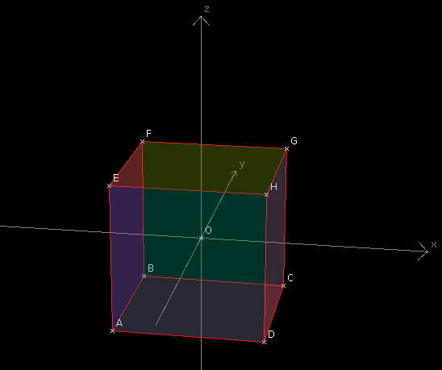

| Choisissez votre langue ! | Choose your language ! |
Nous définissons un cube comme l'ensemble fini de ses 8 sommets.
Un cube comporte 6 faces et 12 arêtes.

Montrer que les isométries conservant globalement un cube sont au nombre de 48.
24 déplacements et 24 antidéplacements.
Caractériser toutes ces isométries.
aide
Commencez par montrer que toute isométrie conservant globalement le cube transforme :
- Un sommet en un sommet
- Une face en une face
- Une arête en une arête
- Le centre de gravité du cube en lui-même
solution
Soit a le côté du cube.
L'image par une isométrie de la face ABCD, soit A'B'C'D' est un parallélogramme car une isométrie est affine.
Par conservation des distances, en outre on a forcément A'B'=B'C'=C'D'=D'A'=a.
Ce qui prouve que A'B'C'D' est en fait un losange.
Pas conservation de l'orthogonalité (A'B') ⊥ (B'C').
A'B'C'D' est donc un carré de côté a, c'est à dire une face du cube.
Les arêtes étant les intersectons de deux faces, il en est de même de leurs images qui sont donc des arêtes.
Les isométries étant affines l'isobarycentre du cube O est conservé (O'=O).
Les isométries cherchées admettent donc toutes O pour point fixe.
Un déplacement de l'espace est entièrement déterminé par les images de 3 points non alignés.
Ainsi tout déplacement conservant le cube est entièrement caractérisé par A'et B', les images de A et B, sachant que O'=O.
L'image de l'arête AB ne peut être que une des 12 arêtes du cube, mais le nombre total des possibilités est à multiplier par 2 car si l'image de AB est EF on peut avoir aussi bien A'=E et B'=F ou bien A'=F et B'=E.
Le nombre maximal de possibilités pour les déplacements est donc 24.
Il y a autant de déplacements que d'anti-déplacements conservant globalement le cube.
En effet si s désigne la symétrie centrale de centre O et si f parcourt l'ensemble des déplacements conservant globalement le cube alors sof parcourt l'ensemble des anti-déplacements conservant globalement le cube.
Tout revient donc à prouver qu'il y a exactement 24 déplacements conservant globalement le cube.
Ces déplacements ayant un point fixe O ce sont tous des rotations autour d'un axe passant par O.
On traite le problème dans un repère orthonormal lié au cube comme sur la figure ci-dessous:
Cherchons les rotations distinctes de l'identité qui conservent globalement le cube.
On trouve tout d'abord les rotations de π/2 , π , 3π/2 autour des trois axes. Soit au total 3×3=9 rotations.
Considérons maintenant les 4 diagonales du cube soient (AG),(EC),(HB) et (DF).
Les rotations d'angles 2π/3 et 4π/3 autour de ces diagonales conservent le cube. Soit au total 8 nouvelles rotations.
Cela dit chaque droite joignant les milieux de deux arêtes opposées est l'axe d'une rotation de d'angle π conservant globalement le cube, ce qui nous donnent 6 nouvelles rotations.
Nous avons donc un total de 23 rotations auxquelles nous ajoutons l'application identique pour un total final de 24 qui est nous l'avons vu le maximum possible.
Il y a donc également 24 antidéplacements laissant globalement invariant le cube.
Caractérisons ces antidéplacements suivants leurs invariants. Il y a tout d'abord la réflexion par rapport au plan EFCD et celles qui lui ressemblent soit au total 6 réflexions.
Les 3 réflexions par rapport aux plans médiateurs des arêtes du cube.
Les autres anti-déplacements n'ont qu'un seul point fixe O. Ce sont :
La composée de la réflexion par rapport au plan EFCD avec un demi tour d'axe orthogoanl à ce plan (6 possiblités).
La composée de la réflexion par rapport à un plan médiateur d'une arête et d'une rotation autour d'un axe orthogonal à ce plan et passant par O et d'angle π/2, π ou 3π/2. Cela donne au total 9 possibilités.
Nous avons listé là les 24 possibilités pour les anti-déplacements conservant globalement le cube.
On peut s'assurer qu'il n'y a aucune répétition en listant pour chacune d'elle les images des points ABCDEFGH dans cet ordre.
We define a cube as the finite set of its 8 vertices.
A cube has 6 faces and 12 edges.
Show that the isometries globally preserving a cube are 48 in number.
24 proper isometries and 24 improper isometries.
Characterize all these isometries.
hint
Start by showing that any isometry globally preserving the cube transforms:
- A vertex to a vertex
- A face to a face
- An edge to an edge
- The center of gravity of the cube to itself
solution
Let a be the side of the cube.
The image by an isometry of the face ABCD, that is A'B'C'D' is a parallelogram because an isometry is affine.
By conservation of distances, moreover, we necessarily have A'B'=B'C'=C'D'=D'A'=a.
Which proves that A'B'C'D' is actually a rhombus.
No preservation of orthogonality (A'B') ⊥ (B'C').
A'B'C'D' is therefore a square of side a, i.e. a face of the cube.
The edges being the intersections of two faces, it is the same for their images which are therefore edges.
The isometries being affine, the isobarycenter of the cube O is preserved (O'=O).
The sought isometries therefore all admit O for fixed point.
A proper isometry of space is entirely determined by the images of 3 non-aligned points.
Thus any proper isometry preserving the cube is entirely characterized by A' and B', the images of A and B, knowing that O'=O.
The image of the edge AB can only be one of the 12 edges of the cube, but the total number of possibilities is to be multiplied by 2 because if the image of AB is EF we can have both A'=E and B '=F or else A'=F and B'=E.
The maximum number of possibilities for moves is therefore 24.
There are as many proper isometries as there are improper isometries globally preserving the cube.
Indeed if s denotes the point reflection with center O and if f covers all the proper isometries globally preserving the cube then sof traverses the set of improper isometries globally preserving the cube.
It all boils down to proving that there are exactly 24 proper isometries globally preserving the cube.
These proper isometries having a fixed point O they are all rotations around an axis passing by O.
We treat the problem in an orthonormal frame linked to the cube as in the figure below:
Let's find the distinct rotations of the identity that globally preserve the cube.
We first find the rotations of π/2 , π , 3π/2 around the three axes. That is a total of 3×3=9 rotations.
Now consider the 4 diagonals of the cube are (AG), (EC), (HB) and (DF).
Rotations of angles 2π/3 and 4π/3 around these diagonals preserve the cube. That's a total of 8 new rotations.
That said, each line joining the midpoints of two opposite edges is the axis of a rotation of angle π globally preserving the cube, which gives us 6 new rotations.
We therefore have a total of 23 rotations to which we add the identical application for a final total of 24 which is, as we have seen, the maximum possible.
There are therefore also 24 improper isometries leaving the cube globally invariant.
Let us characterize these improper isometries according to their invariants. First there is the reflection in relation to the EFCD plane and those which resemble it, i.e. a total of 6 reflections.
The 3 reflections with respect to the mediating planes of the edges of the cube.
The other improper isometries have only one fixed point O. They are:
The composition of the reflection with respect to the EFCD plane with a half turn of the axis orthogonal to this plane (6 possibilities).
The composition of the reflection with respect to a mediator plane of an edge and of a rotation around an axis orthogonal to this plane and passing through O and of angle π/2, π or 3π/2. This gives a total of 9 possibilities.
We have listed here the 24 possibilities for improper isometries globally preserving the cube.
We can ensure that there is no repetition by listing for each of them the images of the ABCDEFGH points in this order.
|
Création Gilles Dubois - licence CC-BY-SA
Created by Gilles Dubois - licence CC-BY-SA
|
Septembre 2023
September 2023
|
Version mobile Jquery
Mobile Jquery version
|
|